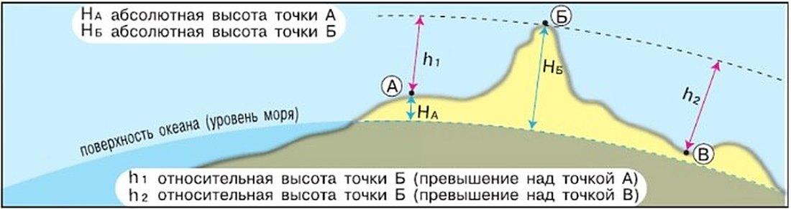
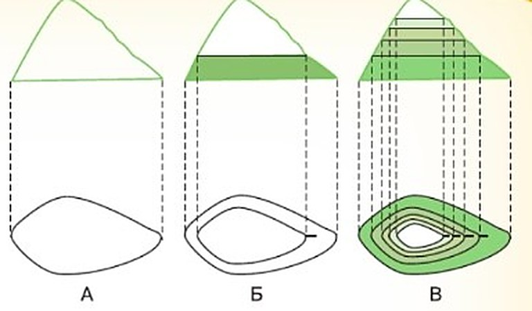
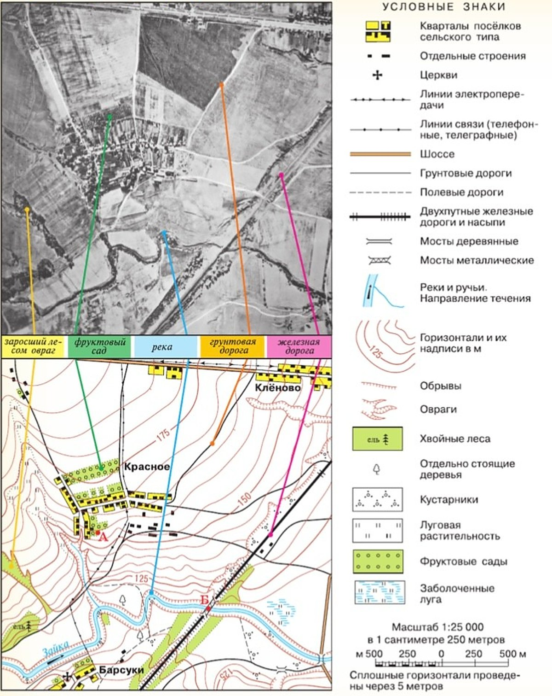

Как изображают неровности земной поверхности на плане местности и карте?
Чтобы нарисовать на плане или карте холм, овраг, гору, нужно знать их высоту или глубину.
Относительная высота. Высота холма от подошвы до вершины — относительная. Она показывает, на сколько одна точка выше другой.
Абсолютная высота. На планах и картах обозначают и абсолютную — её отсчитывают от уровня моря, а его считают за 0 м (рис. 36). В России высоты считают от уровня Балтийского моря — по Кронштадтскому футштоку.
Центр Санкт-Петербурга выше уровня Балтийского моря всего на 3 м, а Москва — на 150 м и больше.
Абсолютную высоту на карте показывают отметкой высоты: точка, а рядом — число метров над уровнем моря.
Как нарисовать холм? Обойдём холм у подошвы, не поднимаясь и не спускаясь, и нарисуем путь на плане — получится очертание холма (рис. 37, А). Поднимемся на 5 м и обойдём ещё раз — внутри появится вторая линия (рис. 37, Б). Потом ещё на 10, 15 и 20 м от подошвы (рис. 37, В).
До вершины остаётся 4 м — меньше пяти, поэтому следующую линию провести нельзя. Значит, относительная высота холма — 24 м.
Горизонтали. Такие плавные линии — горизонтали. Ими показывают неровности земной поверхности (рис. 35). Числа у горизонталей — абсолютные высоты.
Короткие чёрточки у горизонталей — бергштрихи: свободный конец показывает вниз по склону. Где горизонтали сближаются — склон круче, где расходятся — пологий. Горизонтали и бергштрихи рисуют коричневым, а обрывы — мелкими зубцами.
Для того чтобы на плане местности и карте изобразить холм, овраг, гору, необходимо знать их высоту или глубину. При этом высота холма от подножия до вершины относительная. Она показывает, на сколько одна точка выше другой. Кроме того, на планах и картах обозначают абсолютную высоту, которую отсчитывают от уровня моря, принимаемого за 0 м (рис. 36). В России абсолютную высоту принято исчислять от уровня Балтийского моря (Кронштадтский футшток). Известно, что центр Санкт-Петербурга находится выше уровня Балтийского моря лишь на 3 м, а территория Москвы — на 150 м и более.
Абсолютные высоты обозначают отметкой высоты в виде точки, около которой написано количество метров над уровнем моря.
Представьте, что перед нами холм. Обходим этот холм, придерживаясь одной абсолютной высоты. Изображаем на плане свой путь. У нас получится план холма — очертание того места, которое он занимает (рис. 37, А). Поднимемся на 5 м вверх. Придерживаясь этой высоты, снова обойдём холм и опять изобразим план пути. У нас получится вторая горизонтальная линия, опоясывающая холм на высоте 5 м от его подошвы (рис. 37, Б). Поднявшись ещё на 5 м и в третий раз обойдя холм, мы сможем изобразить третью линию уже на высоте 10 м от подошвы. Точно так же, ещё дважды поднимаясь каждый раз на 5 м, мы проведём две линии: на высоте 15 м и на высоте 20 м от подошвы (рис. 37, В). Далее до вершины остаётся 4 м, значит, следующую линию провести нельзя. Можно подсчитать относительную высоту холма: 24 м.
Так с помощью плавных линий — горизонталей изображают неровности земной поверхности на планах и картах (см. рис. 35). Цифрами подписаны абсолютные высоты горизонталей. Короткие чёрточки у горизонталей (бергштрихи) свободным концом указывают направление вниз по склону (см. рис. 37). На рисунке 35 в местах сближения горизонталей склон круче, а там, где они расходятся, склон пологий. Горизонтали и бергштрихи рисуют коричневым цветом. Крутые склоны обрывов показывают мелкими зубцами.

▲ Найди на рисунке, какие высоты отсчитаны от уровня моря, а какие — от другой точки.

Относительная высота — это превышение по вертикали одной точки на земной поверхности над другой.
Абсолютная высота — превышение точки земной поверхности над уровнем моря (океана).
Горизонтали — линии на плане (карте), соединяющие точки с одинаковой абсолютной высотой.
Неровности земной поверхности на плане и карте изображают с помощью горизонталей.
1. Чем абсолютная высота отличается от относительной? Приведи по примеру из параграфа.
2. Почему у холма из параграфа пять горизонталей, а не шесть?
3. Как по карте понять, где склон круче и куда он спускается?
Итоги параграфа
- На топографической карте на рис. 35 найдите населённые пункты. Какой из них расположен выше всех? На каком склоне удобнее зимой кататься с горки?
- Относительная высота показывает превышение точки земной поверхности: а) над уровнем моря; б) над другой точкой.
- Какое утверждение верно?
А. У любой точки на поверхности Земли абсолютная высота больше относительной.
Б. У любой точки на поверхности Земли относительная высота больше абсолютной.
1) Верно только А; 2) Верно только Б; 3) Оба верны; 4) Оба неверны. - Что такое горизонтали?

- Рассмотрите рисунок 35. Рассчитайте, на какой высоте проходит последняя горизонталь перед обрывом на левом берегу реки Зайка.
Проверь себя
Центр Петербурга — 3 м над уровнем моря
От уровня моря.
Москва — 150 м и более
Тоже от уровня моря.
Холм от подошвы до вершины — 24 м
От другой точки — подошвы.
Утёс в Ягодном — 10 м над Волгой
Село над водой.
Подпись у горизонтали на карте
Горизонтали подписаны абсолютными высотами.
Отметка высоты — точка с числом
Метров над уровнем моря.
h1 на рис. 36: точка Б над точкой А
Превышение над другой точкой.
Отсчитывают от Кронштадтского футштока
Уровень Балтийского моря — 0 м.
Горизонтали близко друг к другу
Сближаются — круче.
Горизонтали далеко друг от друга
Расходятся — положе.
Мелкие зубцы
Так рисуют обрывы.
Подниматься легко, почти не устаёшь
Высота растёт медленно.
Без верёвки не забраться
Как обрыв.
Удобно съезжать на санках малышам
Не разгонишься слишком сильно.
1. От чего отсчитывают абсолютную высоту?
2. В России абсолютную высоту отсчитывают от уровня…
3. Что такое горизонтали?
4. Горизонтали на карте сблизились. Какой здесь склон?
5. Линии через 5 м: 0, 5, 10, 15, 20 м, а до вершины ещё 4 м. Какая относительная высота холма?
6. Куда показывает свободный конец бергштриха?
Расскажи вслух
Абсолютная и относительная высота
- Абсолютная — от уровня моря (0 м); в России — от Балтийского моря, Кронштадтский футшток.
- Петербург — 3 м, Москва — 150 м и более.
- Относительная — на сколько одна точка выше другой, например холм от подошвы до вершины.
Как нарисовать холм горизонталями
- Обойти холм у подошвы, не меняя высоты, — получится его очертание.
- Подниматься каждый раз на 5 м и снова обходить — линии внутри линий.
- Холм в 24 м: линии на 0, 5, 10, 15, 20 м, до вершины 4 м.
Как читать рельеф на карте
- Горизонтали подписаны абсолютными высотами; рисуют коричневым.
- Сближаются — склон крутой, расходятся — пологий; бергштрихи — вниз по склону.
- Обрывы — мелкие зубцы, отметка высоты — точка с числом.